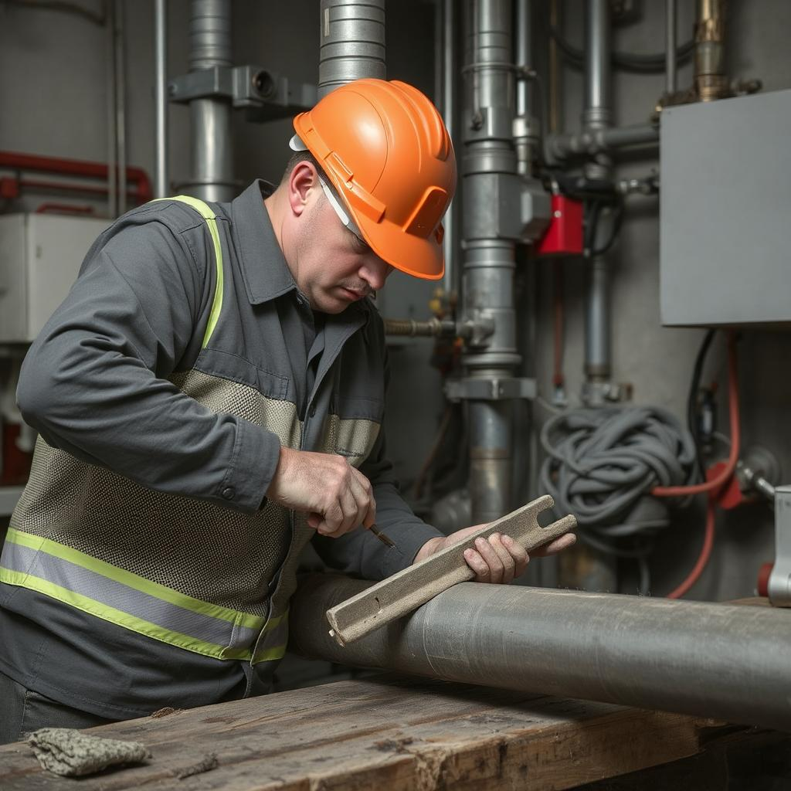

<div class="flex pt-12 px-6 md:px-20 items-center justify-center bg-hero md:h-screen">
  <div class="flex flex-col gap-6 md:flex-row items-center max-w-8xl">
    <!-- Contenu principal -->
    <div class="w-full md:w-1/2 lg:pr-32">
      
      <!-- Grand Titre - Affiché uniquement dans la première étape -->
      <div *ngIf="currentStep === 1">
        <h2 class="text-5xl font-bold text-foreground text-center mt-10 md:text-left">
          Tout savoir sur la <span class="text-primary">Maintenance</span>
        </h2>
        <p class="mt-6 text-lg text-muted-foreground text-center md:text-left max-w-3xl">
          Découvrez l'importance et les objectifs de la maintenance de manière simple et interactive.
        </p>
      </div>

      <!-- Étape 1 : Définition de la maintenance -->
      <div *ngIf="currentStep === 1" class="mt-10 p-8 bg-white rounded-lg shadow-lg w-full">
        <h3 class="text-3xl font-semibold text-primary mb-4">Qu’est-ce que la maintenance?</h3>
        <p class="text-muted-foreground leading-relaxed">
          La maintenance est l’ensemble des actions techniques et administratives permettant de garantir
          le bon fonctionnement et la longévité des équipements. Elle peut être corrective, préventive ou conditionnelle.
        </p>
        
        <!-- Types de maintenance avec liens -->
        <h4 class="text-xl font-semibold text-primary mt-6">Types de maintenance :</h4>
        <ul class="list-disc pl-6 text-muted-foreground">
          <li class="mb-2">
            <a href="#" class="text-blue-600 hover:underline">Maintenance corrective</a> - Intervention après une panne.
          </li>
          <li class="mb-2">
            <a href="#" class="text-blue-600 hover:underline">Maintenance préventive</a> - Planification pour éviter les pannes.
          </li>
          <li>
            <a href="#" class="text-blue-600 hover:underline">Maintenance conditionnelle</a> - Basée sur des capteurs et des mesures.
          </li>
        </ul>
      </div>

      <!-- Étape 2 : Objectifs et importance -->
      <div *ngIf="currentStep === 2" class="mt-10 p-8 bg-white rounded-lg shadow-lg w-full">
        <h3 class="text-3xl font-semibold text-primary mb-4">Objectifs et importance</h3>
        <p class="text-muted-foreground leading-relaxed">La maintenance vise à :</p>
        <ul class="list-disc pl-6 text-muted-foreground">
          <li class="mb-2">Prévenir les pannes et réduire les coûts liés aux réparations imprévues.</li>
          <li class="mb-2">Garantir la sécurité des utilisateurs en minimisant les risques liés à des équipements défectueux.</li>
          <li class="mb-2">Optimiser la durée de vie des équipements et maximiser leur performance sur le long terme.</li>
          <li class="mb-2">Améliorer la productivité des opérations en réduisant les temps d'arrêt non planifiés.</li>
          <li class="mb-2">Respecter les exigences réglementaires et légales en matière de sécurité et de fonctionnement des équipements.</li>
        </ul>
      </div>

      <!-- Étape 3 : Enjeux majeurs de la maintenance -->
      <div *ngIf="currentStep === 3" class="mt-75 p-8 bg-white rounded-lg shadow-lg w-full">
        <h3 class="text-3xl font-semibold text-primary mb-5">Enjeux majeurs de la maintenance</h3>
        <p class="text-muted-foreground leading-relaxed mt-4">
          La maintenance n'est pas seulement une question de réparation, elle joue un rôle clé dans la gestion globale de l'entreprise et de ses ressources. Voici les principaux enjeux :
        </p>
        <ul class="list-disc pl-6 text-muted-foreground">
          <li class="mb-2">
            <strong>Réduction des coûts :</strong> Une gestion proactive de la maintenance permet de réduire les coûts liés aux pannes imprévues et à la réparation des équipements. Cela permet également d’optimiser les ressources financières allouées à la maintenance, en se concentrant sur les interventions les plus nécessaires.
          </li>
          <li class="mb-2">
            <strong>Amélioration de la performance :</strong> Une maintenance bien gérée assure que les équipements fonctionnent à leur niveau optimal, ce qui se traduit par une meilleure performance et une plus grande fiabilité des processus.
          </li>
          <li class="mb-2">
            <strong>Satisfaction des clients :</strong> En garantissant des équipements performants et sûrs, une entreprise peut offrir un meilleur service à ses clients, réduisant les risques d’interruption et améliorant l'expérience client.
          </li>
          <li class="mb-2">
            <strong>Gestion des risques :</strong> En anticipant les défaillances, la maintenance préventive permet de minimiser les risques opérationnels, qu'ils soient liés à la sécurité des employés, à la conformité légale, ou à la réputation de l'entreprise.
          </li>
          <li class="mb-2">
            <strong>Innovation technologique :</strong> L'intégration des nouvelles technologies dans la maintenance, telles que la maintenance prédictive via des capteurs IoT, permet non seulement de prévoir les défaillances avant qu'elles ne se produisent, mais aussi de réduire les coûts d'exploitation sur le long terme.
          </li>
        </ul>
      </div>

    <!-- Étape 4 : Quiz interactif -->
<div *ngIf="currentStep === 4" class="mt-10 p-8 bg-white rounded-lg shadow-lg w-full text-center">
  <h3 class="text-3xl font-semibold text-primary mb-4">Quiz : Testez vos connaissances</h3>
  <p class="text-muted-foreground">Répondez aux questions pour vérifier votre compréhension.</p>
  <form id="quiz-form" class="mt-6 space-y-4">
    <label class="block text-left">
      <span class="text-muted-foreground font-medium">1. Quel est l'objectif principal de la maintenance ?</span>
      <select id="quiz-answer-1" class="block w-full mt-2 p-3 border rounded-lg shadow-sm">
        <option value="">Sélectionnez une réponse</option>
        <option value="1">Augmenter les coûts</option>
        <option value="2">Améliorer la performance des équipements</option>
        <option value="3">Réduire la productivité</option>
      </select>
    </label>
    
    <!-- Nouvelle question 2 -->
    <label class="block text-left">
      <span class="text-muted-foreground font-medium">2. Quelle est la différence entre maintenance préventive et maintenance conditionnelle ?</span>
      <select id="quiz-answer-2" class="block w-full mt-2 p-3 border rounded-lg shadow-sm">
        <option value="">Sélectionnez une réponse</option>
        <option value="1">La maintenance préventive est basée sur des capteurs et la conditionnelle est planifiée</option>
        <option value="2">La maintenance préventive est planifiée, la conditionnelle est basée sur des capteurs</option>
        <option value="3">Les deux types sont identiques</option>
      </select>
    </label>
    
    <!-- Nouvelle question 3 -->
    <label class="block text-left">
      <span class="text-muted-foreground font-medium">3. Quelle est l'importance de l'innovation technologique dans la maintenance ?</span>
      <select id="quiz-answer-3" class="block w-full mt-2 p-3 border rounded-lg shadow-sm">
        <option value="">Sélectionnez une réponse</option>
        <option value="1">Elle permet de prédire les pannes et de réduire les coûts d'exploitation</option>
        <option value="2">Elle augmente les coûts d'exploitation</option>
        <option value="3">Elle n'a pas d'impact sur la maintenance</option>
      </select>
    </label>
    
    <button type="button" (click)="checkQuizAnswers()" class="px-5 py-3 bg-primary text-white font-semibold rounded-lg shadow-md hover:bg-opacity-90">
      Valider
    </button>
    <p id="quiz-result" class="mt-4 text-lg font-semibold"></p>
  </form>

  <!-- Message de résultat -->
  <div *ngIf="quizResult !== null" class="mt-6 text-center">
    <div *ngIf="quizResult === 'success'" class="p-6 bg-green-500 text-white font-bold rounded-lg">
      <h3 class="text-2xl">🎉 Félicitations ! 🎉</h3>
      <p class="mt-2">Vous avez répondu correctement à toutes les questions ! Vous êtes un expert en maintenance ! 👏</p>
      <p class="mt-4">Continuez à briller dans vos connaissances !</p>
      <a href="/next-course" class="mt-4 text-lg text-white hover:underline">Découvrir plus sur le prochain cours</a>
    </div>
    <div *ngIf="quizResult === 'failure'" class="p-6 bg-red-500 text-white font-bold rounded-lg">
      <h3 class="text-2xl">Oups ! 😅</h3>
      <p class="mt-2">Il semble que vous ayez fait quelques erreurs. Pas de panique, réessayez et devenez un pro de la maintenance ! 💪</p>
      <p class="mt-4">Vous pouvez le faire !</p>
      <a href="/next-course" class="mt-4 text-lg text-white hover:underline">Découvrir plus sur le prochain cours</a>
    </div>
  </div>
</div>


      <!-- Boutons de navigation -->
      <div class="mb-2 mt-2 flex space-x-4">
        <button *ngIf="currentStep > 1" (click)="prevStep()" class="px-5 py-3 bg-gray-300 text-black font-semibold rounded-lg shadow-md hover:bg-gray-400">
          Précédent
        </button>
        <button *ngIf="currentStep < totalSteps" (click)="nextStep()" class="px-5 py-3 bg-primary text-white font-semibold rounded-lg shadow-md hover:bg-opacity-90">
          Suivant
        </button>
      </div>
    </div>

    <!-- Image à droite -->
    <div class="w-full md:w-1/2 flex justify-center md:justify-end">
      
   
      
   
    </div>
  </div>
</div>

